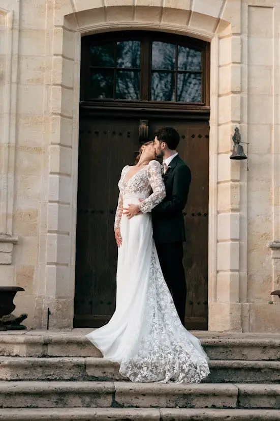
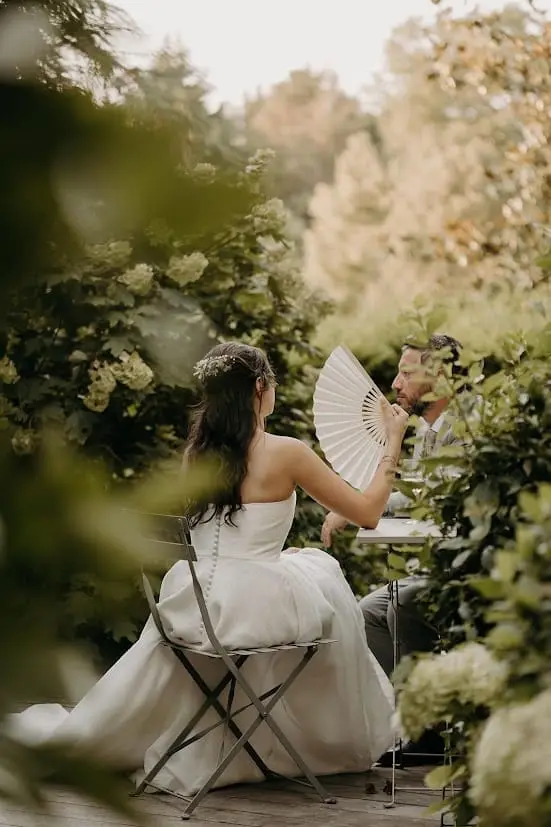
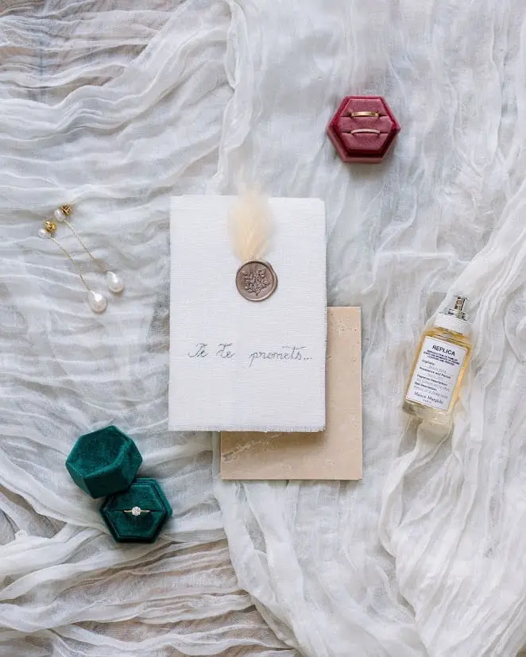
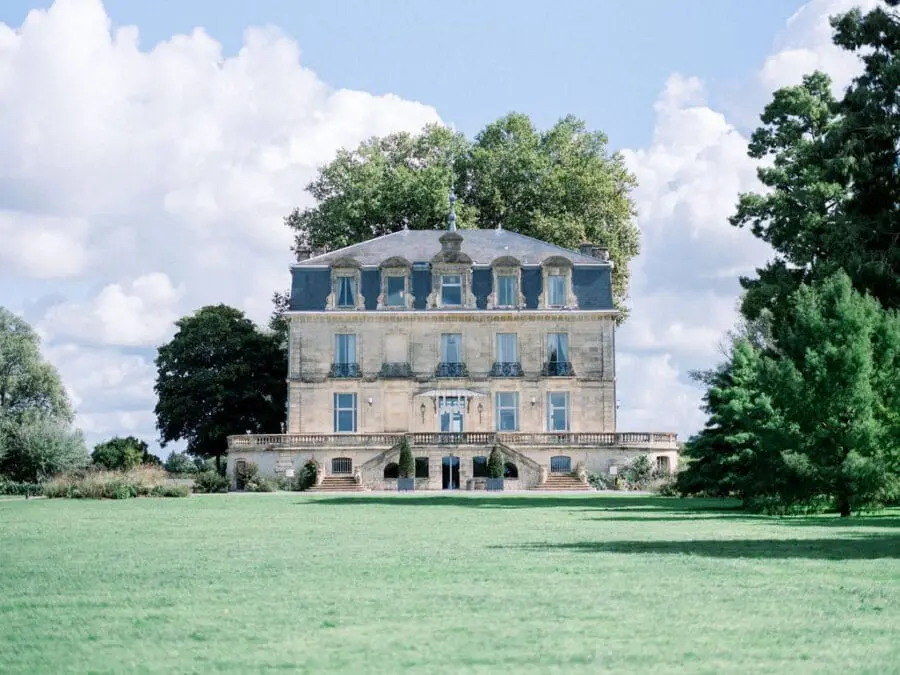
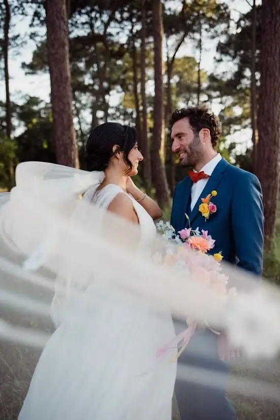
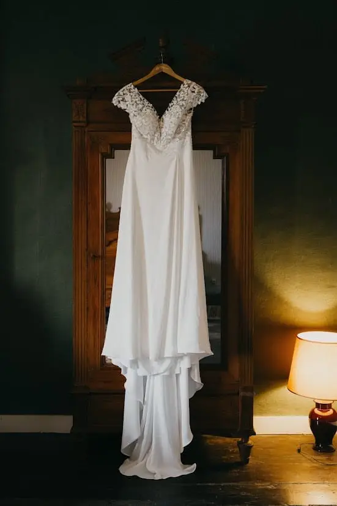
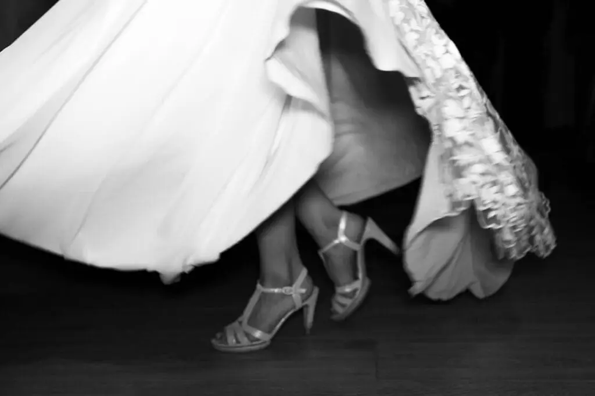

The timeless wedding is winning over more and more couples looking for an elegant, sincere and lasting celebration. Far from passing fads, it rests on strong aesthetic choices designed to carry the same emotion through the years.
Would you like a wedding that will look as elegant today as it will in twenty years? As a wedding planner, I work with couples who want to create a timeless, chic and deeply authentic wedding.
The Bordeaux region, with its wine châteaux and country houses bathed in natural light, offers the ideal setting for a wedding designed down to the smallest detail.
What is a timeless wedding?
A timeless wedding is above all a quest for balance and refinement, where every decision helps create an atmosphere that is chic, understated and deeply memorable, without ever looking dated. Far from fleeting trends, this style rests on a timeless, coherent aesthetic designed to age gracefully. It favours soft, classic colours that enhance the venue and the emotions, paired with noble materials such as linen, silk, wood or ceramics, which bring authenticity and warmth. Timeless wedding decor is pared back, but never minimalist by accident: every element is carefully chosen to serve an elegant, harmonious set design. Particular attention is paid to details, the true threads of the experience, from the stationery to the flowers, to create a sincere and lasting emotion. This style isn't bland; it is right, controlled and resolutely emotional, leaving a strong mark on memories long after the big day.

Why choose a timeless wedding?
In a world where trends change at lightning speed, choosing a timeless wedding in the Bordeaux region is a true statement of elegance and meaning. More than an aesthetic choice, the timeless wedding embodies a lasting, refined and deeply emotional vision of the big day. It appeals to couples who want a wedding that stands the test of time without ever losing its beauty or modernity.
A style that never goes out of fashion
Choosing a timeless wedding means opting for a classic, balanced and harmonious aesthetic. Unlike fleeting trends, this style rests on strong codes: soft, natural colours, clean lines, noble materials and decor thought through in detail. The result: visual and photographic memories that will stay elegant today and in twenty years' time.
Natural, controlled elegance
The timeless wedding favours restraint over excess. Every element has a function and an intention: an elegant set design, pared-back decor and a fluid staging that enhances the venue without overloading it. This approach creates a chic, sophisticated atmosphere while letting the emotion and authenticity of the moment breathe.
A deeply emotional experience
A timeless wedding moves people through its emotional restraint. By focusing on details, textures, light and overall harmony, it creates a soft, enveloping atmosphere. This style highlights what matters: the looks, the gestures, the shared moments. Emotion becomes the common thread, without unnecessary artifice.
A sustainable, responsible choice
Choosing a timeless wedding is also a more sustainable approach. Thoughtful aesthetic choices, reusable elements, quality materials and decor designed to last help limit waste while showcasing craftsmanship and know-how. The timeless wedding puts quality before quantity.
A wedding that reflects you
Finally, the timeless wedding offers great freedom to personalise. It adapts to every venue, every season and every love story. By stepping away from overly marked trends, it lets you create a sincere world, true to your identity and values, for an authentic and unforgettable wedding.
Choosing a timeless wedding is a bet on lasting elegance, sincere emotion and an aesthetic that moves through time with grace.





The essential codes of a successful timeless wedding
A timeless wedding isn't just an aesthetic: it is a true vision, founded on balance, coherence and attention to detail. Far from passing trends, it relies on strong, timeless codes that guarantee an elegant, harmonious and lasting wedding. Here are the essentials for creating a truly timeless wedding.
1. A soft, refined colour palette
Colour is the foundation of any successful set design. A timeless wedding favours neutral, natural shades: off-white, ivory, beige, nude, pearl grey or powdery tones. These hues bring natural elegance and enhance materials, flowers and venues without ever tiring the eye.
2. Pared-back yet carefully crafted decor
Timelessness relies on controlled simplicity. Pared-back decor doesn't mean minimalist or empty, but precisely designed. Every decorative element has its place and purpose: airy floral arrangements, candles, understated tableware, objects chosen with intention. Together they create a fluid, elegant visual harmony.
3. An elegant, coherent set design
A successful timeless wedding relies on a perfectly coherent overall design. From the ceremony to the reception, every space should tell the same story. Lighting, table layout, guest flow and the way the venue is showcased are all designed to create an immersive, gentle and natural experience.
4. Meticulous attention to detail
Details make all the difference in a timeless wedding. Elegant stationery, classic typography, silk ribbons, delicate menus, carefully chosen flowers… These small touches strengthen the wedding's identity and create a subtle but lasting emotion. Nothing is ostentatious; everything is just right.
5. Sustainable aesthetic choices
The timeless wedding is part of a sustainable approach. It favours reusable elements, seasonal flowers, handmade creations and responsible choices. This conscious approach gives the aesthetic even more meaning and makes the wedding respectful and modern.
The outfits

Outfits play a central role in the aesthetic of a timeless wedding, as they embody elegance, restraint and longevity all at once. The bride favours a timeless silhouette, with clean lines and impeccable cuts, far from details too marked by trends. Noble fabrics such as silk, crepe, organza or delicate lace bring natural sophistication, while accessories remain discreet and carefully chosen. For the groom, the suit is classic and perfectly tailored, in understated tones such as black, deep blue or grey, finished with refined details. The aim isn't to overdo it, but to create a look that is right, elegant and harmonious, one that will age gracefully and enhance the memories of the big day.

Timeless decor
The decor of a timeless wedding rests on a pared-back, coherent and carefully controlled aesthetic, where every element has a real intention. Far from accumulation, it favours noble materials and simple forms that stand the test of time with elegance: seasonal flowers in soft hues, candles, delicate glassware, natural textiles and refined tableware. The palette remains deliberately understated and luminous, enhancing the venue without distorting it. The design highlights space, light and volume, creating an atmosphere that is warm, timeless and deeply emotional. In a timeless wedding, the decor never tries to impress, but to tell a harmonious, elegant and lasting story.
The timeless wedding: an emotional experience
The atmosphere of a timeless wedding in Bordeaux is built around sincere moments and a fluid ambience, where elegance blends naturally with conviviality. Activities are designed to bring people together and enhance the guest experience, without ever breaking the harmony of the venue or the overall aesthetic. Soft live music, a string quartet, piano or mellow jazz create instant emotion, while discreet entertainment, a reinvented guest book, a champagne bar or personalised workshops encourage conversation and shared memories. Everything is designed to offer an elegant, timeless sensory experience, where the rhythm of the day respects the highlights of the wedding. In a timeless wedding, the atmosphere isn't overplayed: it is felt, subtle, warm and deeply memorable.
In short
Choosing a timeless wedding means choosing lasting elegance, a controlled aesthetic and a sincere experience.
As a wedding planner, I work with couples who want a timeless, harmonious and deeply personal wedding. And you, are you ready to imagine a wedding that will move through time with the same intensity?
Lovely Day Event offers several services
Wedding planning
I step in at every stage of your preparations and guide you through your choices, bringing ideas and suggestions so that your wedding looks like no one but you.
On-the-day coordination
I will be the conductor of your day, managing the suppliers, the set-up of your decor and the smooth running of this beautiful day.
Wedding design
Creative and passionate, I am a certified Wedding Designer and I create a scenographic atmosphere that matches the theme of your wedding. Styling is included in the Signature package, or offered as an add-on to on-the-day coordination.